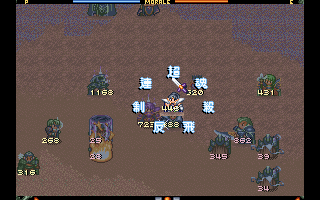

The War of Genesis III[Lv.56]
Characters Obtained
[습관과 중독 67-68p] 부정적 습관을 효과적으로 극복하기 위해서는 첫째, 무엇보다도 자신에게 어떤 부정적 습관이 있는지 그 실체를 스스로 깨닫는 것이 중요하다. 이를 위해 자신이 부정적 습관행동을 할 때마다 일정한 방식으로 기록할 필요가 있다. 예를 들어 자신에게는 식전에 스낵을 지나치게 많이 먹는 버릇이 있다는 것을 깨달았다고 하자. 이 버릇을 극복하기 위해서는 스낵을 먹고 싶은 식욕이 생길 때마다 인덱스 카드에 기록한다. 일주일 동안 수집한 기록을 분석해서 빈도를 정확하게 파악해둔다. 이를 몇 주만 계속하면 그 습관에서 자연스럽게 벗어날 수 있다.
둘째, 자신의 부정적 습관을 스스로 깨닫고 극복하기 위해서는 그와 양립불가능한 행동이 무엇인가를 찾아 행동으로 옮긴다. 예를 들어 식전에 스낵을 먹고 싶은 생각이 들면 식탁에 있는 물을 한컵 마시거나 정원에 나가 걷기를 한다.
셋째, 부정적 습관을 극복하기 위해 자기보상을 한다. 부정적 습관에 대한 욕구가 생길 때마다 그것을 억제하는 것에 대해 스스로 지속시키는 것이 아니라 긍정적 습관을오 대치시키는 수단이 된다.
[습관과 중독 67p] 나쁜 습관을 성공적으로 치료하는 데는 본인의 강한 동기가 절대적으로 필요하다. 좋은 습관을 들이고 싶을 때에는 대체 행동도 생각할 필요가 있다. 금연을 위해 스택을 선호하는 것이 한 예이다. 좋은 습관을 형성하기 위해 오래된 습관을 인위적으로 바꾼다는 것은 매우 어렵거나 불가능하다. 장기간 지속된 습관은 좋은 것이나 나쁜 것이나 신경조직의 특성과도 깊은 관계가 있다. 그렇기 때문에 고쳐나가기가 쉽지 않다. 자신이 자기의 잘못된 습관이 어떤 것이고, 그것을 효과적으로 파괴하는 데는 변화에 대한 강한 동기를 필요로 한다.
[습관과 중독 66p] 좋은 습관은 들이고 나쁜 습관은 좋은 습관으로 수정하는 것은 별개의 과정이 아니다. 그것은 하나의 독립된 과정이다. 즉 동전의 양면과 똑같다.
심리학자 Timothy Pychy는 나쁜 버릇을 고친다는 것은 새로운 습관을 들이는 것이라고 말했다. 신경과학자 Elliot Berkman은 나쁜 버릇을 고치는 것보다는 그것을 새로운 습관으로 대치시키는 것이 보다 쉽다고 말했다. 금연치료에서 금연시키는 것보다는 니코틴껌으로 대치시키는 것이 보다 쉽다는 말이 있다. 나쁜 버릇은 왜 고치기가 힘든가? 그것은 나쁜 습관을 가진 개인의 성격, 동기, 환경, 그리고 수정하고자 하는 습관에 대한 많은 정보를 요구하기 때문이다. 실제 치료에 있어서는 외부의 압력을 이용하는 것보다 개인의 가치체계에 호소하는 것이 보다 바람직하다.
[습관과 중독 64p] 습관은 뇌의 내부에서 이뤄지는 세 가지 기능 - 신호, 관행, 보상 - 으로 이뤄진다. 이 세 가지 기능은 하나의 고리를 형성한다. 신호는 뇌의 자동적 기능을 촉발한다. 신호를 받은 뇌는 관행적으로 물리적, 정신적 행동을 취한다. 보상은 자동적 기능을 원활하게 하는 긍정적 자극이다. 뇌 속에서 이뤄진 신호와 관행, 보상이 반복적으로 보다 잘 통합을 이루면 그것이 곧 습관이 된다.
[습관과 중독 58p] 형성된 습관에는 유연성이 있다. 부정적 습관을 가진 사람이 긍정적 습관을 가진 사람으로 달라질 수 있다. 한 사례를 두고 생각해보자. 어떤 회사원은 사무실에서 4시간마다 흡연하는 습관이 있다. 그는 외부산책으로 흡연을 대신하기로 했다. 이를 계기로 그는 사무능력이 크게 신장되었다고 스스로 보고하고 있다. 이처럼 부정적 습관을 긍정적 습관으로 대치하려면 우선 부정적 습관을 스스로 각성해야 한다. 개인의 각성은 태도로, 태도는 습관으로, 습관은 행동으로 이어진다. 각성한 부정적 습관에 크게 관심을 가지게 되면 부정적 습관은 곧 긍정적 습관으로 대치되어진다. 이 태도는 곧 긍정적 습관으로 굳어진다.
[습관과 중독 50p] 우리의 지각과 행동은 서로 독립된 기능이면서 서로 밀접한 관계를 유지한다. 그러므로 개인의 행동을 이해하기 위해서는 두 기능을 연결시켜야 한다. 신경계통은 행동에 많은 영향을 준다. 이는 개인의 사회적 행동에도 직·간접으로 영향을 준다. 또 정신적 표상에 영향을 주는 여기에 의식은 전혀 관여되지 않는다. 지각과정은 의식과 무관하지만 곧 행동에 영향을 준다.
이와 같은 비의식적 지각과정이 인간행동, 특히 사회적 행동에 주는 영향을 William Carpenter(1813~1885)는 1874년 그의 저서 『정신생리학(Principles of Mental Physiology)』에서 밝히고 있다. 그의 주장에 따르면 우리가 특정한 행동에 대해 생각하는 것만으로도 그 행동을 유발하는 충분한 조건이 된다고 한다.
이와 같은 유사한 주장은 William James(1842~1910)의 저서 『심리학의 원리 2권(The principles of psychology, vol.2)』(1890) 의지의 장에 잘 소개되고 있다. 그는 사고는 곧 행동이라고 주장하였다. 어떤 행동을 생각하면 곧 행동에 대한 충동이 생긴다. 충동은 행동을 유발한다. 그 근원은 의식의 흐름에 있다. 이 과정에서 개인의 의사나 의지는 행동에 대해 의사결정을 하거나 행동 그 자체에 전혀 영향을 주지 못한다. 즉 특정한 행동에 대한 생각이 무의식적으로 자동적·지각적 활동을 통해서 행동을 유발한다고 생각할 수 있다.
[습관과 중독 46p] 습관은 축적된 행동으로 이는 개인의 가치로 이어지며 더 나아가서는 개인의 운명으로 이어진다. 습관이 우리 생활에서 차지하는 힘은 우리가 생각했던 것보다 크다. 습관의 원천은 행동이다.
[습관과 중독 19p] 보다 학술적인 습관에 대한 정의는 1903년 미국심리학회이 기관지 [American Journal of Psychology]에 발표되었다. 미국심리학회는 습관을 이렇게 정의하였다.
"습관은 무의식적으로 그리고 규칙적으로 일어나는 관행적 행동이고, 정신경험의 반복으로 얻어진 유연성이 결여된 사고, 의사, 감정의 통합된 행동이다. 행동하는 당사자는 자신이 행동하고 있다는 의식이 전혀 없다."
How to Trick Your Brain to Like Doing Hard Things – Atomic Habits by James Clear
[습관과 중독 19p] 미국의 심리학자 William James는 1892년 그의 저서에서 이렇게 주장했다.
"우리들의 일상생활은 치밀한 계획에 따라 형성되는 것이 아니다. 그것은 축적된 경험이 특정한 시간에 다시 나타나는 것에 불과하다."
[습관과 중독 18p] 위에 소개한 유치원생의 생활이나 회사원의 생활은 하루 이틀 한 주 두 주에 끝나는 것이 아니고 상당기간 지속된다. 이들의 생활은 숙고 끝에 이뤄지는 것이 아니다. 본인도 의식하지 못하는 가운데 자동적으로 이뤄진다. 이것이 곧 습관이다.
[습관과 중독 15p] 우리의 일상생활은 매우 복잡해 보인다. 하지만 그것은 습관을 하나의 다발로 묶어놓은 것에 불과하다.
[습관과 중독 9p] 모든 습관이 중독으로 이어지는 것은 아니지만 습관을 경험하지 못한 중독은 생각하기 어렵다.
돈되는 전자책(PDF)부업 올인원 가이드북
가슴이 웅장해지는 전자책(PDF)만들기 10단계 공략집.ZIP l 왕초보 어서오고 l 단순함의 기술 l 글천개
(종결)요즘 핫한 N잡! PDF 전자책 판매로 5개월 9,200만원 수익! PDF 제작과 판매의 모든 것! l 글천개 l 신승철
사입하러 도매꾹 가는 사장님들 잠시만요... (쇼핑몰 사입 공식 + 체크리스트)
PKROMEDA ACTIVATION(040321): 4(+8EXP)
PKROMEDA ACTIVATION(032821): 1(+2EXP)
PKROMEDA ACTIVATION(032721): 10(+20EXP)
진짜 자산가가 알려주는 돈 버는 이야기 | 돈의 속성
한 단계 밑에 있는 학교, 회사를 선택하라 | 책그림 백서 2편, 다윗과 골리앗
이 책이 역주행 베스트셀러가 된 이유 | 모든 것을 차단하라 | 책그림 백서 3편
작년에 베스트로 손꼽았던 책들 중 한 권! 우울했던 공백이에게 한 줄기 빛과 같았던 책을 드디어 소개합니다 │ 작가의 탁월한 사색이 담긴 도서 〈외로움의 철학>
공백이 인생책 등극! │ 차별과 혐오, 몸과 시선에 대해 놀라운 생각의 전환을 가져다 준 책 │ 〈낙인찍힌 몸〉 염운옥
PKROMEDA ACTIVATION(031421): 1(+2EXP)
PKROMEDA ACTIVATION(031321): 1(+2EXP)
PKROMEDA ACTIVATION(021421): 7(+14EXP)
PKROMEDA ACTIVATION(021321): 24(+48EXP)
PKROMEDA ACTIVATION(020821): 1(+2EXP)
PKROMEDA ACTIVATION(020721): 5(+10EXP)
PKROMEDA ACTIVATION(020621): 6(+12EXP)
PKROMEDA ACTIVATION(020321): 3(+6EXP)
PKROMEDA ACTIVATION(020121): 5(+10EXP)
class101 자청 자동수익 강의 4-1
PKROMEDA ACTIVATION(012721): 1(+2EXP)
PKROMEDA ACTIVATION(012621): 1(+2EXP)
class101 자청 자동수익 강의 3-6
PKROMEDA ACTIVATION(012521): 1(+2EXP)
class101 자청 자동수익 강의 3-5
PKROMEDA ACTIVATION(012121): 1(+2EXP)
class101 자청 자동수익 강의 3-4
PKROMEDA ACTIVATION(012021): 2(+4EXP)
class101 자청 자동수익 강의 3-3
PKROMEDA ACTIVATION(011921): 2(+4EXP)
class101 자청 자동수익 강의 3-2
PKROMEDA ACTIVATION(011821): 2(+4EXP)
PKROMEDA ACTIVATION(011621): 6(+12EXP)
class101 자청 자동수익 강의 3-1
PKROMEDA ACTIVATION(011521): 4(+8EXP)
class101 자청 자동수익 강의 2-6
PKROMEDA ACTIVATION(011121): 4(+8EXP)
class101 자청 자동수익 강의 2-5
PKROMEDA ACTIVATION(011121): 3(+6EXP)
PKROMEDA ACTIVATION(011021): 10(+20EXP)
PKROMEDA ACTIVATION(010921): 5(+10EXP)
class101 자청 자동수익 강의 2-4
PKROMEDA ACTIVATION(010821): 1(+2EXP)
class101 자청 자동수익 강의 2-3
PKROMEDA CS(010821): 1(+2EXP)
class101 자청 자동수익 강의 2-2
PKROMEDA ACTIVATION(010621): 7(+14EXP)
class101 자청 자동수익 강의 2-1
PKROMEDA ACTIVATION(010521): 5(+10EXP)
class101 자청 자동수익 강의 1-7
class101 자청 자동수익 강의 1-6
PKROMEDA ACTIVATION(010421): 2(+4EXP)
PKROMEDA ACTIVATION(010121): 10(+20EXP)
class101 자청 자동수익 강의 1-5
class101 신사임당 스마트스토어 강의 9-4
class101 신사임당 스마트스토어 강의 9-3
class101 신사임당 스마트스토어 강의 9-2
class101 신사임당 스마트스토어 강의 9-1
class101 자청 자동수익 강의 1-4
PKROMEDA ACTIVATION(010121): 27(+54EXP)
class101 자청 자동수익 강의 1-3
PKROMEDA ACTIVATION(123120): 2(+4EXP)
PKROMEDA ACTIVATION(123020): 1(+2EXP)
class101 자청 자동수익 강의 1-2
PKROMEDA ACTIVATION: 1(+2EXP)
class101 자청 자동수익 강의 1-1
PKROMEDA ACTIVATION: 1(+2EXP)
class101 자청 자동수익 강의 Welcome-3
class101 자청 자동수익 강의 Welcome-2
PKROMEDA ACTIVATION: 33(+66EXP)
class101 자청 자동수익 강의 Welcome-1
class101 자청 자동수익 강의 Outro-1
class101 자청 자동수익 강의 8-5
class101 자청 자동수익 강의 8-4
class101 자청 자동수익 강의 8-3
class101 자청 자동수익 강의 8-2
class101 자청 자동수익 강의 8-1
class101 자청 자동수익 강의 7-13
class101 자청 자동수익 강의 7-12
class101 자청 자동수익 강의 7-11
class101 자청 자동수익 강의 7-10
class101 자청 자동수익 강의 7-9
class101 자청 자동수익 강의 7-8
class101 자청 자동수익 강의 7-7
class101 자청 자동수익 강의 7-6
class101 자청 자동수익 강의 7-5
class101 자청 자동수익 강의 7-4
class101 자청 자동수익 강의 7-3
class101 자청 자동수익 강의 7-2
class101 자청 자동수익 강의 7-1
class101 자청 자동수익 강의 6-7
class101 자청 자동수익 강의 6-6
class101 자청 자동수익 강의 6-5
class101 자청 자동수익 강의 6-4
class101 자청 자동수익 강의 6-3
class101 자청 자동수익 강의 6-2
class101 자청 자동수익 강의 6-1
class101 자청 자동수익 강의 5-15
class101 자청 자동수익 강의 5-14
class101 자청 자동수익 강의 5-13
class101 자청 자동수익 강의 5-12
class101 자청 자동수익 강의 5-11
class101 자청 자동수익 강의 5-10
class101 자청 자동수익 강의 5-9
class101 자청 자동수익 강의 5-8
class101 자청 자동수익 강의 5-7
class101 자청 자동수익 강의 5-6
class101 자청 자동수익 강의 5-5
class101 자청 자동수익 강의 5-4
class101 자청 자동수익 강의 5-3
class101 자청 자동수익 강의 5-2
class101 자청 자동수익 강의 5-1
class101 자청 자동수익 강의 4-6
class101 자청 자동수익 강의 4-5
class101 자청 자동수익 강의 4-4
class101 자청 자동수익 강의 4-3
class101 자청 자동수익 강의 4-2
class101 자청 자동수익 강의 4-1
class101 자청 자동수익 강의 3-6
class101 자청 자동수익 강의 3-5
class101 자청 자동수익 강의 3-4
class101 자청 자동수익 강의 3-3
class101 자청 자동수익 강의 3-2
class101 자청 자동수익 강의 3-1
class101 자청 자동수익 강의 2-6
class101 자청 자동수익 강의 2-5
class101 자청 자동수익 강의 2-4
class101 자청 자동수익 강의 2-3
class101 자청 자동수익 강의 2-2
class101 자청 자동수익 강의 2-1
class101 자청 자동수익 강의 1-7
class101 자청 자동수익 강의 1-6
class101 자청 자동수익 강의 1-5
class101 자청 자동수익 강의 1-4
class101 자청 자동수익 강의 1-3
class101 자청 자동수익 강의 1-2
class101 자청 자동수익 강의 1-1
class101 자청 자동수익 강의 인트로 3
class101 자청 자동수익 강의 인트로 2
class101 자청 자동수익 강의 인트로 1
class101 신사임당 스마트스토어 강의 12-5
class101 신사임당 스마트스토어 강의 12-4
class101 신사임당 스마트스토어 강의 12-3
class101 신사임당 스마트스토어 강의 12-2
class101 신사임당 스마트스토어 강의 12-1
class101 신사임당 스마트스토어 강의 11-4
class101 신사임당 스마트스토어 강의 11-3
class101 신사임당 스마트스토어 강의 11-2
class101 신사임당 스마트스토어 강의 11-1
class101 신사임당 스마트스토어 강의 10-5
class101 신사임당 스마트스토어 강의 10-4
class101 신사임당 스마트스토어 강의 10-3
class101 신사임당 스마트스토어 강의 10-2
하나라도 더 파는 진짜 방법｜마케팅 겨자씨
class101 신사임당 스마트스토어 강의 10-1
class101 신사임당 스마트스토어 강의 9-4
class101 신사임당 스마트스토어 강의 9-3
class101 신사임당 스마트스토어 강의 9-2
class101 신사임당 스마트스토어 강의 9-1
class101 신사임당 스마트스토어 강의 8-4
class101 신사임당 스마트스토어 강의 8-3
class101 신사임당 스마트스토어 강의 8-2
class101 신사임당 스마트스토어 강의 8-1
class101 신사임당 스마트스토어 강의 7-6
class101 신사임당 스마트스토어 강의 7-5
class101 신사임당 스마트스토어 강의 7-4
class101 신사임당 스마트스토어 강의 7-3
class101 신사임당 스마트스토어 강의 7-2
class101 신사임당 스마트스토어 강의 7-1
class101 신사임당 스마트스토어 강의 6-6
class101 신사임당 스마트스토어 강의 6-5
class101 신사임당 스마트스토어 강의 6-4
class101 신사임당 스마트스토어 강의 6-3
class101 신사임당 스마트스토어 강의 6-2
class101 신사임당 스마트스토어 강의 6-1
class101 신사임당 스마트스토어 강의 5-8
class101 신사임당 스마트스토어 강의 5-7
class101 신사임당 스마트스토어 강의 5-6
class101 신사임당 스마트스토어 강의 5-5
class101 신사임당 스마트스토어 강의 5-4
class101 신사임당 스마트스토어 강의 5-3
class101 신사임당 스마트스토어 강의 5-2
class101 신사임당 스마트스토어 강의 5-1
class101 신사임당 스마트스토어 강의 4-5
class101 신사임당 스마트스토어 강의 4-4
class101 신사임당 스마트스토어 강의 4-3
class101 신사임당 스마트스토어 강의 4-2
class101 신사임당 스마트스토어 강의 4-1
class101 신사임당 스마트스토어 강의 3-5
class101 신사임당 스마트스토어 강의 3-4
class101 신사임당 스마트스토어 강의 3-3
class101 신사임당 스마트스토어 강의 3-2
class101 신사임당 스마트스토어 강의 3-1
class101 신사임당 스마트스토어 강의 2-5
class101 신사임당 스마트스토어 강의 2-4
class101 신사임당 스마트스토어 강의 2-3
class101 신사임당 스마트스토어 강의 2-2
class101 신사임당 스마트스토어 강의 2-1
class101 신사임당 스마트스토어 강의 1-4
class101 신사임당 스마트스토어 강의 1-3
class101 신사임당 스마트스토어 강의 1-2
class101 신사임당 스마트스토어 강의 1-1
class101 신사임당 스마트스토어 강의 0-2
class101 신사임당 스마트스토어 강의 0-1
프로그램없이 쇼핑키워드 찾는 방법｜스마트스토어 노하우
1위 카테고리 찾는 방법｜스마트스토어 노하우
알아서 트래픽 모아주는 블로그 포스팅 방법｜스마트스토어 노하우